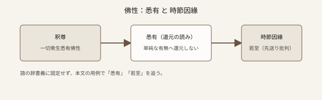

七十五巻 巻一覧
正法眼藏第三 佛性
（ローカル生成の全文: 全文ページ）
この巻の位置（導入）
釈尊の「一切衆生悉有佛性」から入り、道元は悉有という言葉を徹底的に引きずり出します。「有」は普通の存在の有無ではない、業感や妄緣起の説明に還元してはならない、など、後学の誤解を正面からはね除けます。中盤以降は馬鳴・山河大地、さらに「欲知佛性義、当觀時節因緣」へ展開し、時節若至の読みを精密に論じます（「向後に待つ」誤解の批判など）。
語彙の足場
- 悉有：すべてそなわっている。ここでは「衆生」との結びつきが文脈の軸です。
- 佛性義／時節因緣：経典の一節を、修行の現前として読み替える鍵語です。
- 若至：道元は「既に至っている」と同義に近づけます。未来待ちの修行観を退けます。
- 覺知覺了：後半、風火の動著を佛性と混同する誤りを弾くために対比されます。
本文（冒頭・抜粋）
抜粋は doc/正法眼蔵.txt に準拠します。原文の参照元:
https://shomonji.or.jp/zazen/doc/genzou.html
釋迦牟尼佛言、一切衆生、悉有佛性、如來常住、無有變易。
これ、われらが大師釋尊の師子吼の轉法輪なりといへども、一切諸佛、一切祖師の頂𩕳眼睛なり。參學しきたること、すでに二千一百九十年［當日日本仁治二年辛丑歳］正嫡わづかに五十代［至先師天童淨和尚］、西天二十八代、代代住持しきたり、東地二十三世、世世住持しきたる。十方の佛祖、ともに住持せり。
佛言、欲知佛性義、當觀時節因緣、時節若至、佛性現前。
図解（スケッチ SVG）

深掘り（短い手がかり）
「悉有」を草木の種子になぞらえる見解は、道元の眼からは凡夫の情量に落ちるとされます。比喩で理解した気になった瞬間に、原文の鋭さが失われやすい箇所です。草木の章が出てきたら、必ず前後の定義（悉有は何の「有」ではないか）とセットで読み返してください。
確認（形成評価）
← 前巻：摩訶般若波羅蜜 · 巻一覧 · 問答 Bot